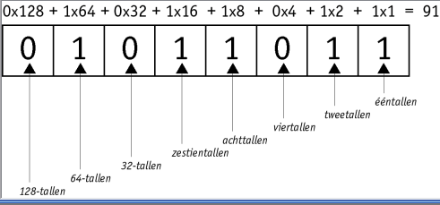

In Nederland kennen wij de cijfers 0 tot en met 9, het tientallig getallenstelsel. Met deze cijfers kunnen wij allerlei verschillende getallen maken, zoals 22, 58 of 1.256. Eigenlijk denk je daar nooit zo over na, de cijfers zijn er gewoon. En meestal denken mensen dat dit ook de enige manier is om getallen te maken. Maar dat is niet zo…
Want naast deze 'gewone' cijfers, bestaat er ook een binair getallenstelsel. Binair betekent tweedelig. Dit is een tweetallig getallenstelsel dat alleen maar bestaat uit de cijfers 0 en 1. Dan denk je, maar met alleen deze twee getallen kan je toch geen getallen zoals 8753 maken? Maar dat kan wel, want door deze in een bepaalde volgorde te zetten betekenen ze getallen. Het is een soort code die vooral wordt gebruikt bij computers. In een ASCII-tabel zie je hoe karakters onder andere binair genoteerd worden in een computer. Hieronder kan je een voorbeeld van een ASCII-tabel zien.
Hier een leuk spelletje om met het binaire stelsel te oefenenEen 0 of een 1 noem je een bit. Je kunt getallen maken door bits achter elkaar te zetten.
